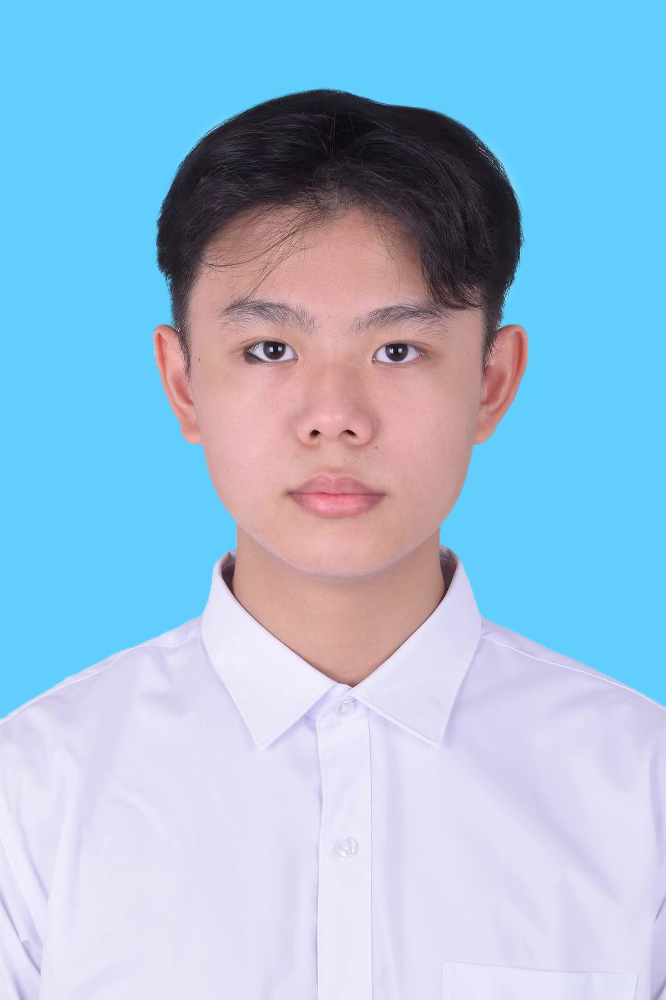

关于我
你好！我是杜杭，中国科学技术大学软件学院的硕士研究生，目前在合肥高新校区学习。我是一名喜欢「动手造东西」的程序员，从算法竞赛到独立开发小工具，一路走来最享受的，是把一个模糊的想法一步步变成能真正跑起来的软件。
我的兴趣集中在后端工程、数据存储与云原生方向，平时喜欢折腾服务器、写自动化脚本，也热衷于研究数据库和中间件的底层实现。除此之外，我也在持续学习前端，希望把技术栈打通，做一名更完整的工程师。

中国科学技术大学 软件学院 硕士研究生
你好！我是杜杭，中国科学技术大学软件学院的硕士研究生，目前在合肥高新校区学习。我是一名喜欢「动手造东西」的程序员，从算法竞赛到独立开发小工具，一路走来最享受的，是把一个模糊的想法一步步变成能真正跑起来的软件。
我的兴趣集中在后端工程、数据存储与云原生方向，平时喜欢折腾服务器、写自动化脚本，也热衷于研究数据库和中间件的底层实现。除此之外，我也在持续学习前端，希望把技术栈打通，做一名更完整的工程师。
写代码之外，我有几个让我放松又充实的爱好：
我的长期目标，是成为一名擅于解决复杂系统问题的后端工程师。围绕这个目标，我把成长拆成三个阶段：
目标岗位：后端工程师 方向：云原生 + 数据 持续学习中